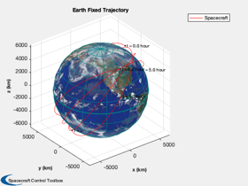
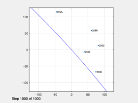
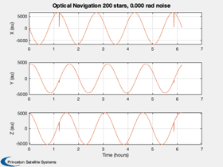

Estimate the orbit position using horizon measurements
Assume the spacecraft is orbiting the Earth and measures n star vectors. We point the camera at the horizon. This script uses the Hipparcos star catalog for navigation.
This is a method of optical navigation that is what sailors use.
------------------------------------------------------------------------ See also: Constant, ISSOrbit, Period, RVOrbGen, PlotPlanetOrbit, Mag, Unit, NavigationCamera, StarCameraViewer, LoadCatalog, RaDec2U, HorizonUnitVectors, U2Q, TimeLabl, Plot2D ------------------------------------------------------------------------
%-------------------------------------------------------------------------- % Copyright (c) 2020 Princeton Satellite Systems, Inc. % All rights reserved. %-------------------------------------------------------------------------- % Since 2020.2 %-------------------------------------------------------------------------- % Select the number of stars to use nStars = 200; % Noise is added to the measured angle between the stars and the sun. oneSigma = 1e-5; % Earth radius a = Constant('equatorial radius earth'); % Number of steps n = 1000; % Create an orbit [el, jD0] = ISSOrbit; p = Period(el(1)); t = linspace(0,4*p,n); [r,v] = RVOrbGen(el,t); n = length(t); jD = jD0 + t/86400; PlotPlanetOrbit( [r;v], jD, 'Spacecraft', 'Earth' ) % Get the range range = Mag(r); uR = Unit(r); % Navigation Camera data structure d = NavigationCamera; % Setup the two camera viewers hNav = StarCameraViewer('initialize','Navigation Camera',n); % Load the star catalog starCat = LoadCatalog( 'Hipparcos' ); uStarCat = RaDec2U( starCat.rA, starCat.dec ); % One position rMeas = zeros(3,n); for k = 1:n uH = HorizonUnitVectors(r(:,k),v(:,k),[],pi/2); d.q = U2Q(uH,[0;0;1]); yN = NavigationCamera( r(:,k), d ); uStar = uStarCat(:,yN.star.star); % Stars in the ECI frame m = size(uStar,2); thetaH = acos(uH'*uStar)' + oneSigma*randn(m,1); uHM = pinv(uStar')*cos(thetaH); phi = acos(uHM'*uR(:,k)); rho = a/sin(phi); ang = acos(uStar'*uR(:,k)) + oneSigma*rand(size(uStar,2),1); rMeas(:,k) = rho*pinv(uStar')*cos(ang); StarCameraViewer('update',yN,[],hNav, d,k); end [t,tL] = TimeLabl(t); s = sprintf('Optical Navigation %d stars, %5.3f rad noise',nStars,oneSigma); Plot2D(t,[r;rMeas],tL,{'X (au)','Y (au)','Z (au)'},s,... 'lin', {'[1 4]' '[2 5]' '[3 6]'}); %--------------------------------------  